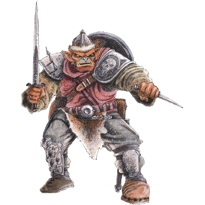

Etymology
The term "hobgoblin" comes from "hob" ("elf") [A Hob, is also flat metal shelf at the side or back of a fireplace, having its surface level with the top of the grate and used especially for heating pans. (Meaning that a hobgoblin may simply be referring to a household Goblin or spirit that resides in this particular location in a household)] "goblin" ("mischievous and ugly fairy"); "Hob" is simply a rustic name for the countryside goblin, "a piece of rude familiarity to cover up uncertainty or fear". "Hob" is generally explained as a diminutive for "Robert",[2] and here short for "Robin Goodfellow".[3] The earliest instance of the word can be traced to about 1530, although it was likely in use for some time prior to that.[2]
Folklore
Hobgoblins seem to be small, hairy little men who, like their close relatives the brownies, are often found within human dwellings, doing odd jobs around the house while the family is asleep. Such chores are typically small tasks like dusting and ironing. Often, the only compensation necessary in return for these is food. While brownies are more peaceful creatures, hobgoblins are more fond of practical jokes. They also seem to be able to shapeshift, as seen in one of Puck's monologues in A Midsummer Night's Dream. Robin Goodfellow is perhaps the most mischievous and most infamous of all his kind, but many are less antagonizing. Like other fae folk, hobgoblins are easily annoyed. They can be mischievous, frightening, and even dangerous.[4] Attempts to give them clothing will often banish them forever, though whether they are offended by such gifts or are simply too proud to work in new clothes differs from teller to teller.
- Billy Blind is a clever hobgoblin or brownie found in several ballads collected by Francis James Child. Billy Blind helps humans in dramatic situations by offering valuable information and advice.[5][6][7][8]
- Blue Burches is the name of a shapeshifting hobgoblin who played harmless pranks in the home of a shoemaker and his family on the Blackdown Hills in Somerset. His usual form was that of an old man wearing baggy blue breeches but he also took the form of a white horse, a black pig and a wisp of blue smoke. The family took his presence in good stride but some clergymen learned of his existence and banished him from the house.[9]
- Robin Roundcap (not to be confused with Robin Redcap) haunted Spaldington Hall in Spaldington, East Riding of Yorkshire and was a hearth spirit of the true hobgoblin type. He helped thresh the corn and performed other domestic chores, but when he was in the mood for mischief he would mix the wheat and chaff again, kick over the milk pail, and extinguish the fire. He is said to have been confined in a well for a stipulated number of years through the prayers of three clergymen. This well is known as Robin Roundcap's Well.[10]
Literature
In the poem "L'Allegro" (1645) by John Milton a domestic hobgoblin or brownie, known as a Lubbar Fend (or lubber fiend) and described as strong and hairy, threshes the corn then lays by the fireplace enjoying his bowl of cream that he earns as payment.[14] In the earlier play The Knight of the Burning Pestle (1607) by Francis Beaumont, a similar being is known as Lob-Lie-by-the-Fire, described as a giant and the son of a witch.[15] The folklorist Katharine Briggs stated that the two creatures are generally equated.[16] Her own fantasy novel, Hobberdy Dick (1955), is about a hobgoblin that lives in the home of a 17th-century Puritan family.[17] In John Bunyan's hymn "To Be a Pilgrim" (1684), the hobgoblin is coupled with "a foul fiend" as two monstrous beings who try and fail to "daunt the Pilgrim's spirit". The term "hobgoblin" is used sometimes to mean a superficial object that is a source of (often imagined) fear or trouble. The best-known example of this usage is probably Ralph Waldo Emerson's line, "A foolish consistency is the hobgoblin of little minds", from the essay Self-Reliance.[18] Hobgoblins exist in the works of J. R. R. Tolkien as a larger kind of orc, though they are not prominently featured. In the preface of The Hobbit, he states that "Orc is not an English word. It occurs in one or two places but is usually translated goblin (or hobgoblin for the larger kinds)".[19] In The Spiderwick Chronicles, a hobgoblin named Hogsqueal features prominently in the second and fifth books of the series (The Seeing Stone, and The Wrath of Mulgarath). In the books, Hogsqueal says that hobgoblins are born without teeth, so they often steal baby teeth from under children's pillows. Hogsqueal is portrayed as a selfish character, always hungy, insulting to others, and annoyed with always being confused for a goblin. In the film adaptation, which condenses the events of the series to one film, Hogsqueal is voiced by Seth Rogen.[citation needed]
All credit to Wikipedia